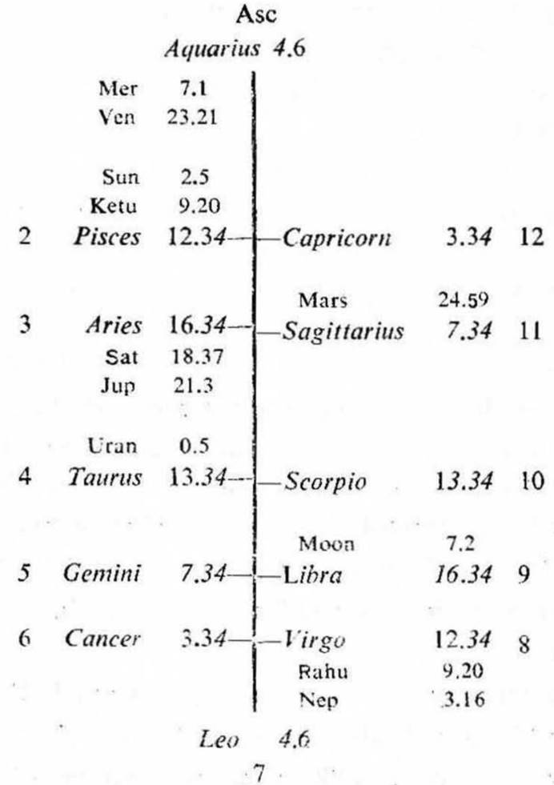
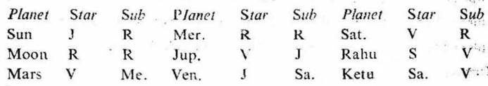
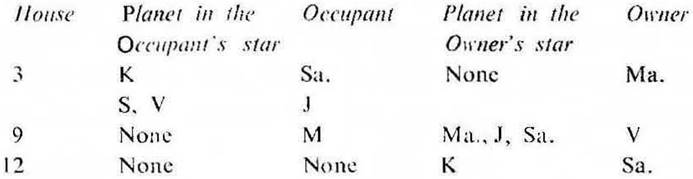

Female. Birth 16-3-1941. Sunday 5-25-0 A.M. I.S.T.; 23°N 2', 72°E 35'; Ayanamsa 22° 56'.


If the sub lord of the 12th cusp is the significator of 3, 9 or 12 and especially of 9 foreign travel will be promised during the joint period of the significators of 3, 9 and 12.
12th cusp. In this birth map the sub lord of the 12th cusp is Saturn. It owns 12 and occupies 3. It is in the star of Venus which owns 9. So Saturn is the significator of 9 and connected with 3 and 12. Hence it promises foreign travel to the native.

So the significators are Sun, Mars, Jupiter, Venus, Saturn and Ketu. Out of them Jupiter is in its own sub in 3: Venus is in the sub Saturn in 3 and Ketu is in the sub Venus owning 9. Hence select Jupiter, Venus and Ketu as the strong significators of foreign travel. The native will go abroad during the joint period of these three planets.
The native was born during the period of Rahu with balance of 17Y 6M 2D. The joint period of Jupiter, Venus and Ketu will start from 4-2-1969 and will continue upto 30-3-1969. So she will go abroad during this period when the transit agrees with the joint period ruler or rulers.
Sun will transit in Aquarius in the star Jupiter from 4-3-1969 upto 16-3-1969 and Venus will transit in Aries in the star Ketu from 5-3-1969. So she will be able to go abroad before 16-3-1969.
Actually she started for London by aeroplane on 14-3-1969 at about 1-0 A.M. I.S.T. Friday. At this time Sun was in Aquarius 29° 44' in the star Jupiter (the period ruler); Moon in Capricorn 2° 43' in the sub Jupiter; Jupiter in Virgo 8° 53' in the sub Venus (the sub period ruler); Venus in Aries 3° 4' in the star Ketu (the inter period ruler); and Ketu was in Virgo 7° 30' in its own sub.